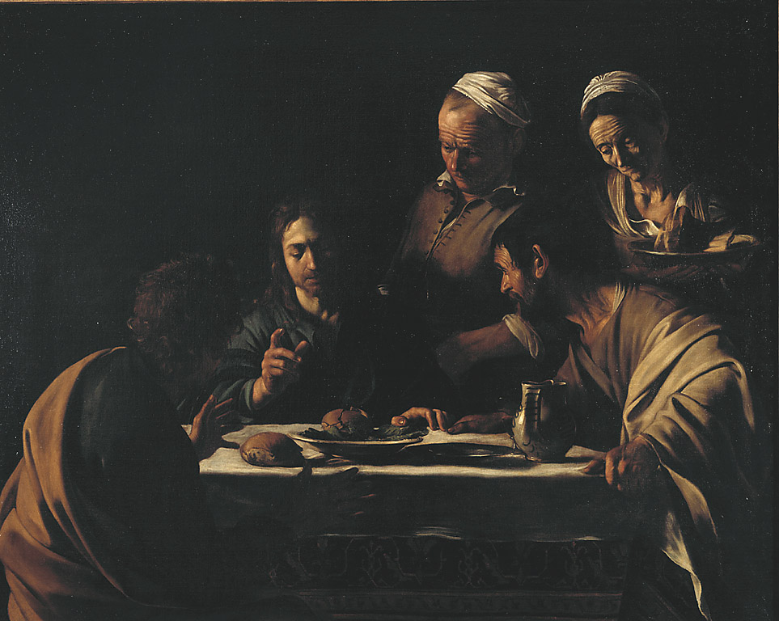

Home
Methodology
SPARQL queries
Identifying Gaps and Creating Triples
LLM prompts
Conclusion
La Cena in Emmaus
I chose the painting called Supper in Emmaus. First, I try to find the painting using only the name:
